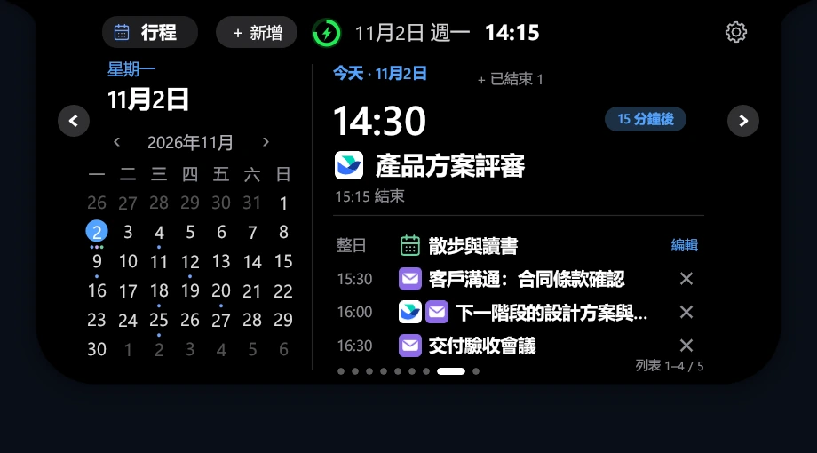

鬼島
螢幕上緣那一小條，換成整天的儀表板：通知、天氣、行事曆、音樂、AI 額度，抬眼就看得到，不用為了看一句話切走整個視窗。
全繁體、台灣用語，目前進入內部測試。
這是什麼
OVERVIEW貼在螢幕上緣的一條島
兩種形態可選：貼齊上緣的劉海，或離邊一點的膠囊。垂直、左右兩側也能停靠，拖曳時有拿起、跟手與吸附落位的動效。
平常只露一半
收起狀態只留時間與天氣這類最基本的資訊，寬度大約一半；點一下或滑過才展開完整內容，看完再收回去。
不佔你的桌面
不只島體本身，展開的內容也會跟著形態收合，不會突然蓋住視窗；需要時才展開，也不會跳出來搶焦點。
實際樣子
ON SCREEN



島上能做的事
FEATURES形態自由
劉海／膠囊兩種形態、上下左右四向停靠、極簡劉海與橫線細條；拖曳有拿起、跟手、吸附與落位動效，多螢幕與縮放比例也對得上。
訊息上島
LINE、Instagram、Threads、Facebook 等訊息與系統通知集中到島上，頭像與來源一眼分辨，點一下直接跳回對話視窗。
音樂與歌詞
走系統媒體控制，播放、暫停、切歌、獨立音量與進度跳轉都在島上；有歌詞就同步顯示，沒在聽就自動讓位給其他資訊。
天氣與行程
當地實況、逐時與多日預報、日出日落與日照軌跡；行事曆事件一併收進來，下一個行程不用開行事曆也知道。
AI 額度面板
多家 AI 服務與中轉站的剩餘額度集中一覽，常駐時直接顯示重點數字，不用逐個開網頁確認還能不能用。
信箱與驗證碼
接上信箱後，驗證碼與訂單類郵件會在島上提示，複製就能貼上；不開信箱分頁也不會漏掉。
桌面與系統狀態
常駐欄可放時鐘、日期、溫度與系統資訊，細部間距與字級可調，長時間掛著也不刺眼。
環境自檢
啟動前先確認系統組建、顯示驅動與執行庫，缺什麼就講清楚，必要時一鍵修復，不留一頭霧水的黑畫面。
台灣版做了什麼
LOCALIZED不是簡轉繁，是整套在地化
台灣版把介面文字逐條改寫成台灣用法，而不是丟給簡繁轉換器；再補上字型、時間格式、地名與打包方式，讓它在台灣的電腦上像原生軟體。
- 全繁體台灣用語設定、檔案、資料夾、記憶體、螢幕、系統匣、捷徑、行事曆、主題——照台灣人實際講法，不是逐字轉換。
- 地名與時間格式天氣地點顯示「台灣 · 市 · 區」，不會冒出「臺灣省」；時鐘可切 12／24 小時與秒數。
- 外觀跟著系統設定頁配色跟著作業系統深淺色走；島體主題另有奶油、毛玻璃、懸浮雲與漸層系列可選。
- 免安裝打包解壓即用、不寫登錄檔；換電腦或換資料夾直接搬走，不留下安裝殘留。
- 品牌與圖示換成鬼島自己的識別與圖示，程式名稱、視窗標題、系統匣項目全部一致。
授權
LICENSE站在原作者的開源專案上
鬼島台灣版衍生自 Renly1994／xiaotang-daozai（Windows 桌面靈動島），原專案以 MIT 授權釋出。島體形態、模組架構與大部分功能的原作功勞都在上游，台灣版只做在地化與打包這一層。
依 MIT 授權，本專案保留原作者的版權聲明與授權條文，LICENSE 隨程式一起附上。
內測期間不對外提供下載、原始碼位址與授權發放；正式開放時會在本頁公告，並依同一授權釋出。
取得方式
ACCESS正式開放後會提供免安裝壓縮包與檔案雜湊值；內測期間請勿轉傳測試檔案。
程式不需要連外也能用；天氣、額度、信箱等模組，只在你填入自己的服務設定後才會連線。
常見問題
FAQ什麼時候開放？
目前是內部測試，沒有對外時程；確定開放時會直接改本頁，屆時才提供下載與授權方式。
跟原版差在哪裡？
功能面沿用上游開源專案，差異在語言與在地化：全繁體台灣用語、地名與時間格式、外觀與品牌識別、免安裝打包。程式架構與模組邏輯沒有重寫。
需要管理員權限嗎？
免安裝版解壓即用，一般權限就能跑；只有要讀取需要更高權限的系統資訊時，才會請你提權。
會不會把資料傳出去？
設定、憑證與紀錄都存在你自己的電腦裡；天氣、額度、信箱這類模組是直接用你填的設定連到該服務，不經過本專案的中繼伺服器。
支援哪些服務？
音樂走系統媒體控制，多數播放器都能接；訊息以 LINE、Instagram、Threads、Facebook 與系統通知為主；AI 額度與信箱則依你設定的服務而定。